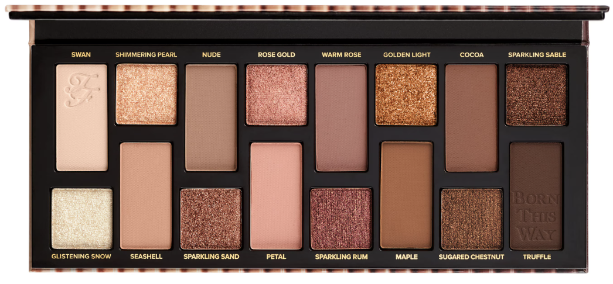

Too Faced · guia de aplicação
The Natural
Nudes.
Uma seleção de nudes rosados, quentes e luminosos para criar estrutura, profundidade e luz com acabamento sofisticado.

16 sombras
Do suave ao intenso.
Use os mattes para transição, côncavo e profundidade. Os metálicos e brilhos entram na pálpebra móvel, no centro ou no canto interno.
MatteBrilho / metálico